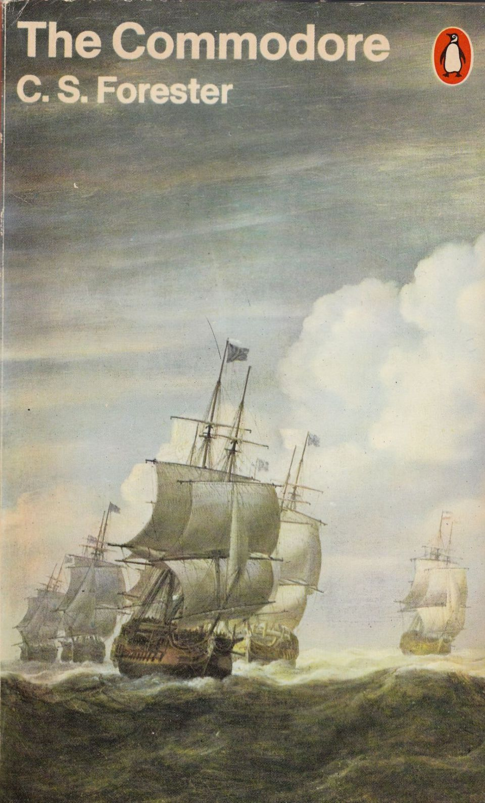
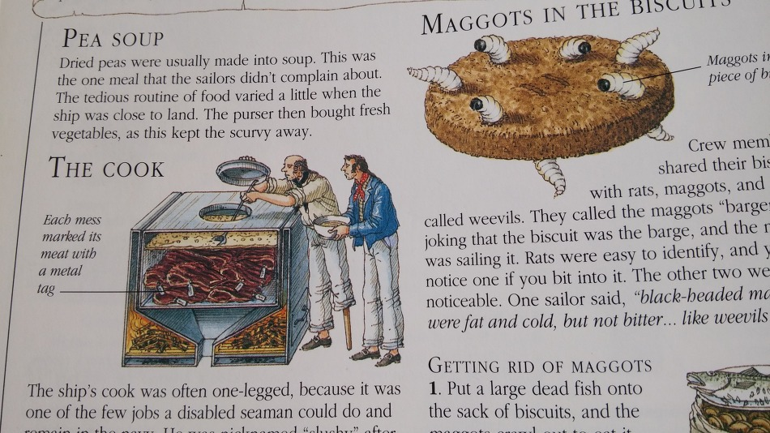
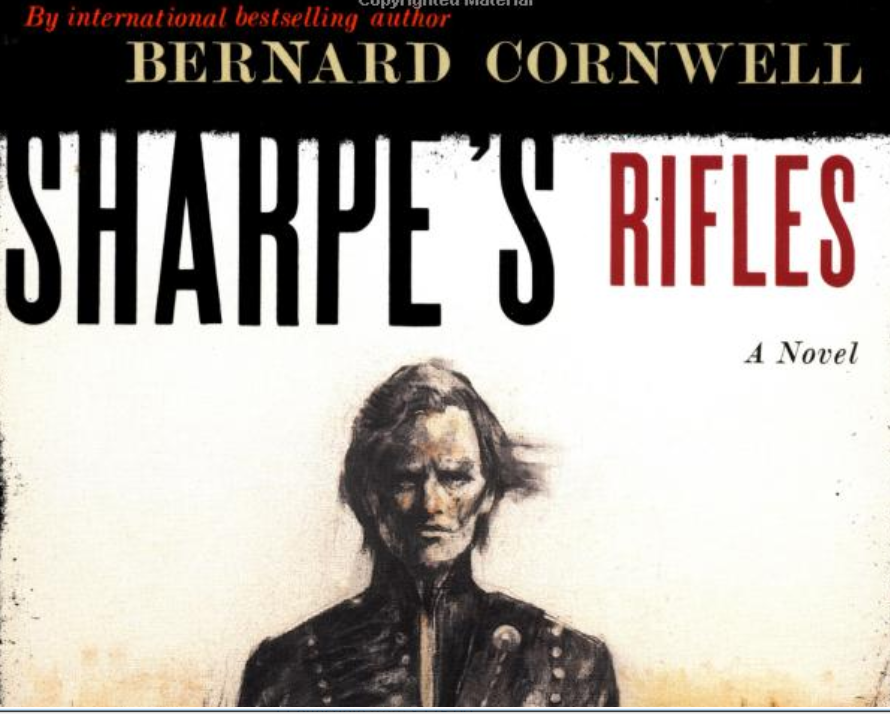
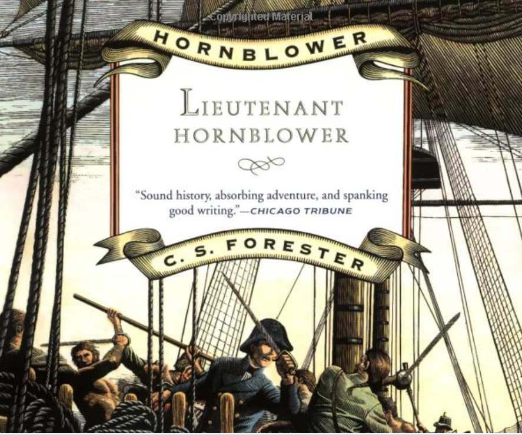
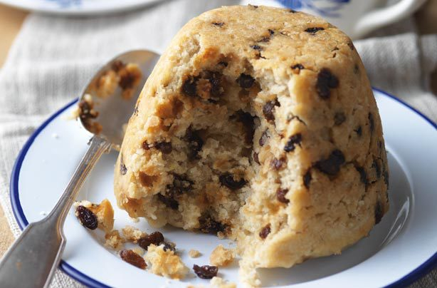

나폴레옹 시대 역사 소설들 중 식사 장면 모음
게시: 2018-07-19T06:30:00+09:00

혼블로워 시리즈 중 제8편은 "The commodore"입니다. 혼블로워가 임시 제독(commodore)이 되어, 소함대를 이끌고 발트해로 진입해서, 프랑스와의 전쟁을 저울질하고 있던 러시아의 짜르 알렉상드르에게 프랑스에게 저항하도록 외교관 역할을 하는 장면입니다. 여기서, 알렉상드르가 불시에 혼블로워의 기함을 방문하여, 영국 해군 측에서 점심 식사를 대접합니다만, 혼블로워는 일부러 평상시 영국군 장교들이 먹는 식사를 그대로 제공하기로 합니다.
The Commodore by C.S.Forester (배경 : 1812년 러시아) -------------------------------
오찬은 혼블로워의 선실에서 8명이 함께 들었다. 혼블로워와, 기함의 함장인 부시, 그리고 2명의 선임 장교 및 4명의 러시아인이 참석했다. 부시는 형편없는 식탁 위의 음식을 보고 초조감에 땀이 흐를 정도였다. 마지막 순간에 부시는 혼블로워를 한 쪽으로 끌어내어, 제발 고집 피우지말고 전함의 평범한 식사에 덧붙여 고급스러운 특식도 같이 대접을 하자고 사정을 했지만, 혼블로워는 요지부동이었다. 부시는 짜르를 잘 대접해야 한다는 강박 관념에서 벗어날 수가 없었다. 제독을 접대하는 하급 장교가 평범한 선원에게 배급되는 염장 쇠고기(salt beef)를 식탁에 올려놓는다면, 그는 승진할 희망을 버리는 것이 나을 것이었다. 고지식한 부시는 이 상황을 그 이외의 관점에서는 볼 수가 없었다.
짜르는 브라운이 혼블로워 앞에 차려준 낡아빠진 주석 수프 그릇을 흥미롭게 쳐다보았다.
"완두콩 수프입니다, 폐하." 혼블로워가 설명했다. "선상의 생활에서는 아주 근사한 음식 중의 하나이지요."
칼린은 오랜 습관에 따라 무심코 그의 건빵을 식탁에 두드리기 시작하다가, 짜르 앞에서 지금 뭐하는 짓인가 싶어 흠칫 멈추었다. 그러나, 마치 죄라도 지은 마냥, 다시 두드리기 시작했다. 혼블로워가 모두에게 내렸던 명령을 기억해낸 것이다. 즉, 혼블로워는 식탁에 누가 앉아있는지 의식하지말고, 평소 식사때 하던 습관 그대로 행동하라고 엄명을 내렸던 것이다. 그는 이 명령에 덧붙여, 이를 망각할 경우 엄중한 처벌을 내리겠다고 협박까지 했었다. 칼린은 혼블로워가 이런 협박을 하는 경우에는 정말 그 협박을 실행한다는 것을 잘 알고 있었다. 알렉상드르는 칼린을 쳐다보고는, 마치 '저게 뭐하는 거요'하고 묻는 듯이 부시를 쳐다보았다.

"미스터 칼린은 건빵 속의 바구미를 뽑아내려고 두드리는 겁니다, 폐하." 부시가 잔뜩 긴장하며 설명했다. "가볍게 두드리면 바구미가 스스로 기어나옵니다. 이렇게 말이지요, 폐하."
"아주 흥미롭구료." 알렉상드르는 그렇게 말했지만, 건빵은 입에 대지 않았다. 그의 참모 중의 한명이 그 행동을 따라 해보았다. 그는 까만 대가리가 달린 통통하게 살이 오른 허연 바구미가 나오는 것을 보고는 아마도 욕설로 추정되는 러시아어를 줄줄이 뱉어내기 시작했다. 이것이 그 참모가 전함에 오른 뒤 처음 한 말이었다.
러시아인 방문객들은 이 불길한 시작에 이어, 조심스럽게 수프의 맛을 보았다. 하지만 혼블로워가 언급한 대로, 영국 해군에서는 이 완두콩 수프가 가장 맛이 좋은 음식이었다. 바구미를 보고 욕지꺼리를 내뱉었던 그 참모는 맛을 보고는 놀랐다는 듯이 만족의 탄성을 올리고는, 그의 접시를 삽시간에 비우고 한 그릇을 더 받았다. 다음 코스로는 고작 3가지 요리가 더 있었다. 소금에 절였다가 삶은 소갈비, 역시 같은 방법으로 요리된 소의 혀와 돼지고기에, 양배추 절임이 딸려나왔다. 알렉상드르는 이 음식을 찬찬히 살펴보고는 현명하게도 소 혀를 택했다. 러시아 해군성 장관과 참모는 혼블로워의 권유에 따라 3가지 요리를 이것저것 조금씩 다 담은 접시를 받았다. 고기는 혼블로워와 부시, 허스트가 직접 잘랐다. 처음에는 전혀 말이 없다가 이젠 수다쟁이가 된듯한 참모는 정말 러시아인다운 식욕으로 소금에 절인 쇠고기를 씹기 시작했는데, 그걸 씹어삼키는 것은 정말 길고도 힘든 작업이었다.
브라운이 럼을 따르기 시작했다.
"이것이 영국 해군의 생명을 유지시키는 피(life blood)입니다, 폐하." 알렉상드르가 럼이 담긴 그의 큰 컵을 유심히 살펴보자, 혼블로워가 말했다. "제가 진심어린 선의를 담아 여러분께 건배를 제창해도 좋을까요 ? 모든 러시아인의 황제 폐하를 위해 ! 황제 폐하 만세 !"
알렉상드르를 제외한 전원이 자리에서 일어나서 건배했다. 모두가 앉자마자 다시 알렉상드르가 일어났다.
"대영제국의 국왕을 위해."
러시아인 참모가 쓰던 프랑스어는 그가 이 해군용 럼주에 얼마나 감동을 받았는지를 설명하면서 다시 러시아어로 바뀌었다. 그는 럼주를 처음 맛본 것이었다. 결국 그는 술잔을 단숨에 비우고 한잔 더 달라고 브라운에게 잔을 내밈으로서, 그가 얼마나 이 술이 마음에 들었는지를 아주 명료하게 보여주었다.
-------------------------------------------------------------

Sharpe 중위는 라이플 대대의 패잔병들을 이끌고, 스페인을 침공해들어오는 나폴레옹군의 추격을 피해, 영국군 본대와 헤어져 포르투갈 리스본 쪽으로 도주하는 중입니다. 일행은 도중에, 역시 프랑스군으로부터 피난을 떠난 영국인 선교사 가족인 파커 일가를 만나게 되어 길을 함께 하다가 어떤 스페인 마을에 이르러 밤을 지내게 됩니다.
Sharpe's Rifles (1809, 스페인) ------------------------------
그들은 밤을 보내기 위해 작은 마을에 머물기로 했다. 조지 파커가 스페인어를 할 줄 알았으므로, 파커가 흥정을 해서 파커 가족은 마을 술집 겸 여관의 가장 큰 방을 세를 내었고, 라이플 대대의 병사들은 마굿간에서 밤을 보내게 되었다.
전에 비바르 소령이 소개해준 수도원에서 선물해준 굳은 빵이 가진 음식의 전부였는데, 샤프 중위는 병사들이 뭔가 좀 더 먹어야 한다는 걸 잘 알고 있었다. 여관 주인에게는 포도주와 고기가 있었지만, 여관 주인은 샤프가 돈을 지불하기 전에는 이 둘을 절대 내주지 않았다. 샤프는 돈이 한푼도 없었으므로, 조지 파커에게 돈을 좀 꾸어보려고 해보았으나, 파커는 그의 와이프가 가족의 돈줄을 주관한다는 사실을 슬픈 듯이 실토했다.
파커 부인은 망또와 스카프로 몸을 잔뜩 감싸고 있었는데, 샤프가 돈 이야기를 하자 분노로 몸이 부풀어오르는 것 같았다. "중위, 돈이라고요 ?"
"병사들은 고기를 좀 먹어야 합니다, 부인."
"우리가 군대에게 재정 지원까지 해야 하나요 ?"
"나중에 정부에서 보상받으실 수 있습니다, 부인." 샤프는 파커 가족의 조카딸인 루이자가 자기를 쳐다보고 있는 것을 느꼈지만, 부하들의 밥값을 위해, 파커 부인의 신경을 거스르지 않으려고 그 시선을 애써 무시했다.
파커 부인은 가죽 지갑을 짤랑거리며 흔들어보였다. "이건 주님의 돈이란 말이요, 중위 !"
"단지 빌리는 것 뿐입니다, 부인. 제 부하들이 굶는다면 어떻게 가족분을 보호해드릴 수 있겠습니까 ?"
이렇게 비굴하게 사정한 뒤에야, 파커 부인은 돈을 좀 풀 생각을 하게 되었다. 그녀는 여관 주인을 불러오라고 한 뒤, 주인과 흥정을 해서 염소 뼈를 한솥 사서, 그걸로 든든한 수프를 만들도록 했다.
그 흥정이 끝난 뒤, 샤프는 파커 부인이 요구한 영수증을 쓰면서 머뭇거렸다. "그리고 포도주를 살 돈도 좀... 부인 ?"
조지 파커는 천장으로 눈을 치켜올려 떴고, 루이자는 갑자기 양초를 바삐 돌보는 척 했다. 파커 부인은 마치 공포에 질린 듯한 표정으로 샤프를 쳐다보았다. "술이라고 ?"
"예, 부인"
"부하들이 술을 마신단 말이요 ?"
"병사들은 술을 배급받도록 되어있습니다, 부인."
"배급이라고 ?" 언성이 점점 높아지는 것이 말썽을 예고하는 듯 했다.
"영국 육군 규정에 따르면, 부인, 하루에 포도주 1 파인트(배스킨 라빈스의 1파인트 그릇 생각하시길... 역주) 또는 럼주 1/3 파인트를 배급받도록 되어 있습니다."
"병사 한 명당 말이에요 ?"
"물론입니다, 부인"
"그들이 크리스챤 가족을 안전지대로 호위 중일 때는 안됩니다." 파커 부인은 치마 속 주머니에 지갑을 쑤셔넣었다. "우리 주님과 구세주의 돈으로 술 같은 걸 살 수는 없어요, 중위. 부하들에게는 물을 마시라고 하세요. 내 남편과 나는 물 외에는 마시지 않는답니다."
"또는 약한 맥주(small beer, 맥주를 빚고 난 뒤의 찌꺼리를 이용하여 만든 알콜 도수 1~2도 정도의 약한 맥주, 싼 음료의 대명사 : 역주)를 마시기도 하지요." 조지 파커는 서둘러 정정을 했다.
파커 부인은 남편 말을 무시했다. "영수증이나 주실까요, 중위 ?"
샤프는 어쩔 수 없이 영수증에 서명한 뒤, 여관 주인을 따라 나왔다. 정말 돈이라고는 전혀 없었으므로, 제복 바지 옆에 달린 은단추를 4개 뜯어내어 포도주를 조금 샀다. 이렇게 해서 산 포도주는 50여명의 라이플 부대원에게 나눠주니 일인당 겨우 한컵씩 돌아갔다. 병사들은, 연골 투성이의 뼈다귀 수프를 받을 때 처럼, 이 간에 기별도 안가는 포도주를 말없이 불만에 가득찬 표정으로 받았다. 특히 샤프가 그 다음날 새벽 4시에 기상이라는 것을 알려주자, 병사들 사이에서는 거의 반란에 가까운 웅성거림이 일어났다...
------------------------------------------------------------------------------

1802년 ~ 1803년 사이 영국과 프랑스는 아미앵 조약에 의해 잠깐 평화기간을 가집니다. 이 기간 도중, 많은 영국 해군 장교들은 half-pay 상태로, 간단히 말해 실업자가 됩니다. 여동생들이 딸린 부시는 half-pay만으로는 정말 근근히 먹고 삽니다. 그러다가 추운 런던 거리에서, 군용 외투(great coat)조차 전당포에 맡긴 상태가 된 옛 전우 혼블로워를 만나게 됩니다.
Lieutenant Hornblower by C. S. Forester (배경 : 1803년, 영국) ---------------
"우리도 식사할 시간이 되지 않았나 ?" 혼블로워가 물었다.
"그런 것 같아." 부시가 대답했다.
식당(eating house)은 브로드 스트리트에 있었는데, 대개 그렇듯이, 나무 의족을 한 전직 선원이 운영하고 있었다. 그에게는 버르장머리 없는 아들이 하나 있어서 시중을 들고 있었는데, 혼블로워와 부시가 식당에 들어서서 떡갈나무 탁자와 벤치로 된 식탁에 앉자, 그 아이가 주문을 받으러 왔다. 식당 바닥에는 톱밥이 수북히 깔려 있었다.
"에일(ale) 드려요 ?"
"아니, 에일은 안 들겠어." 혼블로워가 대답했다.
그 버릇없는 아이의 태도는, 4페니짜리 정식에 아무 것도 마시지 않는 허름한 해군 장교를 어떻게 생각하는지 그대로 드러내 보였다. 그는 음식이 담긴 접시를 그들 앞에 던지듯이 내려놓았다. 접시에는 삶은 양고기 약간과, 감자, 당근, 무, 보리에 완두콩 푸딩이 약간 얹혀 있었다. 이 모든 것은 묽은 고기국물에 흠뻑 적셔져 범벅이 되어 있었다.
"이걸 먹으면 최소한 배가 고프지는 않아." 혼블로워가 말했다.
그럴 수 있을런지 모르겠지만, 확실히 혼블로워는 최근에 배가 부른 상태인 적이 거의 없었던 것 같았다. 그는 처음에는 음식을 우아하게 관심없는 듯이 먹기 시작했으나, 한입 한입 먹으면서 그의 식욕이 점점 살아났고 반대로 그의 절제는 점점 줄어들었다. 그의 접시는 정말 눈 깜짝할 사이에 싹 비워졌다. 그는 빵으로 접시 바닥을 닦아 먹었다.
부시도 식사 습관이 느린 편이 아니었으나, 그는 자기가 반도 채 먹기 전에 혼블로워가 접시를 깔끔히 싹싹 닦아먹는 것을 보고 깜짝 놀랐다. 혼블로워는 무척 쑥스러운 듯이 웃었다.
"혼자 식사를 오래 했더니 식사 습관이 안좋아지네." 그는 변명하듯 말했는데, 평소 절제된 모습이었던 혼블로워가 이렇게 어색한 변명을 한다는 것은 그가 얼마나 당혹스러워 하는지를 보여주는 반증이었다.
혼블로워 자신도 그 말을 꺼내자마자 괜히 약한 모습을 보였다는 것을 깨닫고, 자기는 아무렇지도 않은 척 하기 위해 거드름을 피우듯 벤치 위에서 뒤로 기대었다. 그러면서 아주 편하다는 듯이 양손을 자기 코트의 주머니에 찔러 넣었다. 바로 그 순간, 그의 얼굴 표정이 확 바뀌었다. 그나마 창백하던 그의 빰에서 핏기가 싹 가시면서, 경악의 표정, 심지어 공포의 표정마저 떠올랐다.
부시도 덩달아 놀랐다. 그는 혼블로워가 갑자기 발작을 일으켰다고 생각했으나, 곧 혼블로워의 변화는 그가 손을 호주머니에 넣은 동작과 상관있다는 것을 깨달았다. 하지만 호주머니에서 뱀을 발견한 사람도 저렇게까지 공포의 표정을 짓지는 못했을 것이다.
"무슨 일인가 ? 대체 왜 - ?" 부시가 물었다.
혼블로워는 천천히 그의 오른손을 호주머니에서 꺼냈다. 그는 주먹쥔 손을 한동안 펴지 않고 있더니, 마지 못해 한다는 듯 아주 천천히, 마치 자신의 운명을 두려워하듯 손을 폈다. 하지만 손에서 나온 것은 아무 해될 것 없는 은화 한개였다. 반 크라운짜리였다. (반 크라운은 2실링 6펜스, 당시 육군 사병의 일당이 1실링 정도 : 역주)
"별거 아니지 않나 ?" 부시는 어리둥절하여 물었다. "내 주머니에서 반 크라운 짜리 동전 하나를 찾아낸다고 뭐 이상하거나 놀랄 일은 아닐 것 같은데."
"하지만 - 하지만 -" 혼블로워는 말을 더듬었다. 부시는 뭔가 암시되는 것이 있다는 것을 깨달았다.
"아침에는 분명히 없었어." 혼블로워가 말했다. 그리고는 예전의 그 씁쓸한 웃음을 지었다. "난 요즘 주머니에 동전 몇개가 남았는지까지 너무 잘 알고 있을 정도거든."
"뭐 그렇겠군." 부시도 맞장구를 쳐주었다. 그러나 아침부터의 일을 찬찬히 되짚어 보아도, 왜 혼블로워가 저렇게까지 놀라는 반응을 보였는지 이해가 안되었다. "그 하숙집 딸이 집어 넣은거야 ?"
"그래, 마리아야." 혼블로워가 말했다. "그녀가 한 일이 틀림없어. 그래서 그녀가 내 코트를 밖에 가지고 나가서 털어준다고 했던거고."
"참 착한 여자군." 부시가 말했다.
"오, 맙소사 !" 혼블로워가 말했다. "하지만 난 - 난 - "
"왜 안받으려고 하는데 ?" 부시는 물으면서도 대답을 듣기는 어렵다고 생각했다.
"안돼." 혼블로워가 말했다. "이건 - 이건 - 그녀가 이런 짓을 안했더라면 좋았을 것을... 그 불쌍한 여자는 - "
"불쌍한 여자라니 웃기는 소리 말게 !" 부시가 말했다. "그녀는 그냥 자네에게 잘 해주려는 것 뿐이야."
혼블로워는 그를 아무말 없이 한참동안 쳐다보더니, 부시가 자기 입장에서 이 일을 이해하게 만드려는 것이 불가능하다는 듯이 절망적인 몸짓을 한번 해보였다.
"자네가 원한다면 그렇게 볼 수도 있지." 부시는 자기 관점을 고수하며 끈기있게 말했다. "하지만 어떤 여자가 자네 주머니에 반 크라운짜리 동전 하나를 집어넣었다고 마치 프랑스군이 상륙이라도 한 것처럼 호들갑떨 필요는 없지않나 ?"
"하지만 자네는 몰라 - " 혼블로워는 말을 하려다가, 마침내 설명을 포기했다. 부시가 어리둥절해서 쳐다보는 동안, 혼블로워는 다시 자신을 가다듬었다. 그의 얼굴에서 불행의 표정이 싹 사라지고, 평소의 그 수수께끼같은 얼굴로 되돌아왔다. 그 표정의 변화는 마치 투구의 얼굴가리개를 탁 내린 것 같았다.
"좋아." 혼블로워가 말했다. "이걸 아주 잘 써야지." 그는 탁자를 두들겼다. "어이, 여기 !"
"예, 손님."
" 와인을 1파인트 갖다주게. 누구 보내서 당장 구해오도록 해. 와인 1파인트 - 포트 와인으로 말이야."
"예, 손님."
"그리고 오늘의 푸딩은 뭐지 ?"
"커런트 더프입니다." (currant duff : 포도의 일종인 말린 커란트를 넣은 푸딩 : 역주)

"좋아. 그것도 좀 가져와. 우리 둘에게 모두. 그리고 그 위에 바를 잼도 가져오게."
"예, 손님."
"그리고 와인을 마시기 전에 치즈를 좀 먹어야겠어. 이 식당에 치즈는 있나, 아니면 그것도 어디 밖에서 구해와야 하는 건가 ?"
"여기도 좀 있습니다, 손님."
"그럼 당장 가져와."
"예, 손님."
그렇게 주문된 커다란 커란트 더프 조각을 반도 먹지 않고 남긴 걸 보고, 그거야 말로 혼블로워다운 행동이라고 부시는 속으로 생각했다. 치즈도 그냥 맛만 보는 정도로 깨작거리고는 내려놓았다.
--------------------------------------------------------------
** 어느 독자분의 신청으로 재업합니다. 독자님을 최우선으로 생각하는 nasica 올림.